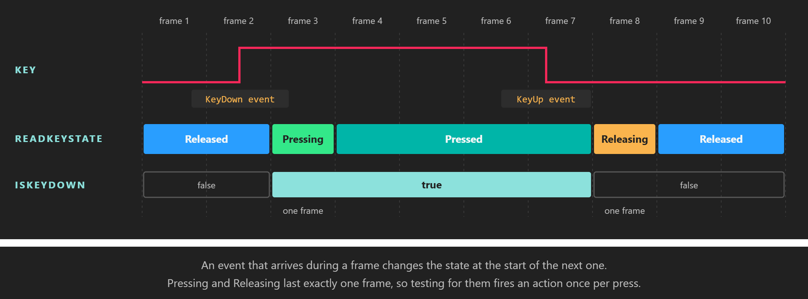

Button States

Pressing and Releasing are one-frame edges between the two resting states.
Every key, mouse button and touch point in Evergine reports its state as a ButtonState. Besides telling you whether something is down, the state tells you whether it went down or up this frame, which is what you need to fire an action once per press instead of once per frame. The rules are the same on every platform, because a single class, ButtonStateTracker<TButton>, computes the states for all of them.
ButtonState
ButtonState (namespace Evergine.Common.Input) is a [Flags] enumeration:
| Member | Value | Description |
|---|---|---|
| Undefined | 0 | No state. The trackers never return it; it is the default value of a ButtonState field that has not been assigned. |
| Released | 1 | Up, and it was already up in the previous frame. This is what you get for any key or button that has never been touched. |
| Pressing | 2 | Went down this frame. Lasts exactly one frame (rising edge). |
| Pressed | 4 | Down, and it was already down in the previous frame. |
| Releasing | 8 | Went up this frame. Lasts exactly one frame (falling edge). |
| You want to know | Read |
|---|---|
| Is it down right now? | IsKeyDown(key) / IsButtonDown(button), true for Pressing or Pressed. |
| Did it go down this frame? | ReadKeyState(key) == ButtonState.Pressing |
| Did it go up this frame? | ReadKeyState(key) == ButtonState.Releasing |
| Is it held since an earlier frame? | ReadKeyState(key) == ButtonState.Pressed |
Because the values are flags, you can test several states at once with a mask. This is exactly how IsKeyDown is implemented:
ButtonState state = keyboard.ReadKeyState(Keys.Space);
bool isDown = (state & (ButtonState.Pressing | ButtonState.Pressed)) != 0;
Tip
Use Pressing for anything that should happen once per press: jumping, firing, toggling a menu. Use IsKeyDown for anything that should continue while the key is held: moving, zooming, charging.
How the states change
The dispatchers feed every down and up event to a ButtonStateTracker<TButton> while they empty their queues, and call Commit() once per frame (see One frame of input). The tracker follows these rules:
- A down event on something
ReleasedorReleasingmakes itPressing. Down events on something already down are ignored, so keyboard auto-repeat never produces a secondPressing. - An up event on something
PressingorPressedmakes itReleasing. - Only one change per frame. If a key goes down and up between two frames, the frame sees
Pressingand the next frame seesReleasing. A tap shorter than a frame is never lost, it just never reachesPressed. - On
Commit(), anything that did not change this frame moves on:PressingbecomesPressedif it is still held (orReleasingif it was released in the same frame it was pressed), andReleasingbecomesReleased.
The tracker is public, so you can use it to give a custom device the same semantics:
| Member | Description |
|---|---|
| ButtonStateTracker(Action<TButton> onReleasing = null) | Creates a tracker. The optional callback runs for each button that moves from Releasing to Released during Commit(). |
| ButtonDown(TButton button) | Reports that the button went down. |
| ButtonUp(TButton button) | Reports that the button went up. |
| Commit() | Advances the states for the next frame. Call it once per frame, after reporting the events. |
| ReadButtonState(TButton button) | Returns the current state. Unknown buttons return Released. |
| IsButtonDown(TButton button) | Returns true if the state is Pressing or Pressed. |
Example: charge and release
This behavior uses all three edges of the Space key. Pressing starts a charge, holding it grows the entity, and releasing it reports how long it was held and resets the scale.
using System;
using Evergine.Common.Input;
using Evergine.Common.Input.Keyboard;
using Evergine.Framework;
using Evergine.Framework.Graphics;
using Evergine.Framework.Services;
using Evergine.Mathematics;
public class ChargeOnSpace : Behavior
{
[BindService]
private GraphicsPresenter graphicsPresenter = null;
[BindComponent]
private Transform3D transform = null;
private float chargeSeconds;
public float MaxChargeSeconds { get; set; } = 2f;
protected override void Update(TimeSpan gameTime)
{
KeyboardDispatcher keyboard = this.graphicsPresenter.FocusedDisplay?.KeyboardDispatcher;
if (keyboard == null)
{
return;
}
switch (keyboard.ReadKeyState(Keys.Space))
{
case ButtonState.Pressing:
this.chargeSeconds = 0f;
break;
case ButtonState.Pressed:
// Pressed is reported every frame the key is held, so it accumulates elapsed time.
this.chargeSeconds = Math.Min(this.chargeSeconds + (float)gameTime.TotalSeconds, this.MaxChargeSeconds);
this.transform.LocalScale = Vector3.One * (1f + this.chargeSeconds);
break;
case ButtonState.Releasing:
System.Diagnostics.Debug.WriteLine($"Released after {this.chargeSeconds:0.00} s of charge");
this.transform.LocalScale = Vector3.One;
break;
}
}
}